A novel kernelized fuzzy C-means algorithm with application in medical image segmentation [31]
ISIMA Promo 2014 - Maxime ARRIAZA F4 & Kevin RENELLA F2
Présentation du sujet
La segmentation d'images joue un rôle crucial dans de nombreux domaines de l'imagerie médicale. Nous avons implémenté un solution de segmentation d'image issue de l'article [31] de Dao-Qiang Zhang et Song-Can Chen, chercheurs de la Chinese Academy of Sciences (couplé au département informatique de l'université chinoise d'aéronautique et d'astronautique).
La méthode de traitement d'image présentée dans cet article, Spatially constrained KFCM (SKFCM), permet une segmentation d'image en régions floues, inspirée de la méthode Fuzzy C-means (FCM), mais utilisant une distance induite par un fonction noyau (issues des machines à vecteurs de support ou SVM), et une prise en compte du voisinage par l'introduction d'une contrainte spatiale dans la fonction objectif du FCM.
Méthode
Partie théorique
Il est tout d'abord nécessaire de définir ce qu'est un ensemble flou.
Un ensemble flou est un ensemble dont les bords sont mal définis.
Cela se traduit par une fonction d'appartenance à valeurs dans [0,1] par opposition au cas classique où la fonction
d'appartenance prend deux valeurs 0 ou 1. Cela permet de définir des ensembles d'une manière plus souple, tolérant des informations
imprécises, incomplètes et/ou incertaines.
Cette propriété est exploitée en traitement d'images, et plus précisémment en classification où les classes, appelées aussi régions,
sont représentées par des ensembles flous. Cela est fort utile lorsque les régions ne peuvent pas être définies de manière nette et précise.
Leur manipulation en gradant le caractère flou permet de traiter des données imprécises, incertaines et/ou redondantes d'une manière plus
flexible.
La classification floue autorise le chevauchement des classes (appelées aussi régions).
Une segmentation non floue peut être obtenue par affectation de chaque pixel à la classe pour laquelle son degré d'appartenance est maximal.
L'algorithme des Fuzzy C-Means (FCM) est un algorithme de classification floue fondé sur l'optimisation d'un critère
quadratique de classification où chaque classe est représentée par son centre de gravité. L'algorithme nécessite de connaître le nombre de
classes au préalable et génère les classes par un processus itératiff en minimisant une fonction objectif. Ainsi, il permet d'obtenir une
partition floue de l'image en donnant à chaque pixel un degré d'appartenance à une région donnée.
L'algorithme utilise :
- Le nombre de régions c.
- Un ensemble de centres de classes défini par :
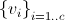
- Un ensemble de pixels défini par :
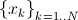
- Une matrice U, contenant les degrés d'appartenances aux différentes classes, définie par :
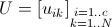
Pour avoir une bonne partition, on impose aux éléments de U les contraintes suivantes :
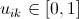
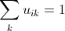
L'algorithme du FCM fait évoluer la partition ( matrice U ) en minimisant la fonction objectif suivante :
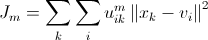
m > 1 est un paramètre contrôlant le degré de flou. (généralement m = 2)
L'algorithme Kernelized Fuzzy C-Means (KFCM) est inspiré de l'algorithme FCM mais la norme utilisé dans l'expression
quadratique est remplacé par une distance induite par une fonction noyau.
La fonction noyau utilisée est une fonction gaussienne définie par :
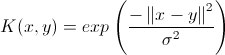
L'algorithme Spatially constrained KFCM (SKFCM) est inspiré de l'algorithme KFCM mais prend en compte le voisinage
d'un pixel dans le processus de mise à jour des degrés d'appartenances (soit de la matrice U).
La nouvelle forme quadratique à optimiser est donc définie par :
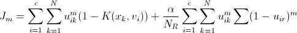
Alpha est un paramètre permettant d'influencer sur l'effet de pénalité.
Nk représente le voisinage du pixel xk
NR représente le cardinal du voisinage Nk
Implémentation
Matrice de partition
Afin de représenter la matrice de distrubution, nous avons implémenté une matrice à trois dimensions.
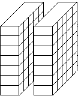
Chaque coupe de cette matrice représente une classe de l'image. Si nous décidons de segmenter l'image de base avec 6 classes, nous auront donc une matrice avec les valeurs suivantes :
- width : Largeur de l'image en entrée
- height : Hauteur de l'image en entrée
- depth : Nombre de classes (6)
Chaque valeur de cette matrice de partition contient le taux d'appartenance d'un pixel à une classe.
Par exemple, un pixel P(x, y) peut appartenir à 20% à la classe A, à 40% à la classe B et à 40% à la classe C. Dans tous les cas, pour une paire (x, y) donnée, la somme des valeurs en Z doit être 1 (un pixel appartient à une l'image, il doit donc être réparti sur les classes existantes à 100%).
Reconstitution du résultat
Nous avons implémenté deux types de résultats :
- Segmentation non floue : Nous considérons qu'un pixel appartient à une seule classe. La classe choisie est celle qui à le plus grand degré d'appartenance.
- Segmentation floue : Un pixel peut appartenir à plusieurs classes. L'appartenance à chaque classe est définit par les degrés
d'appartenance liant le pixel à la classe.
Algorithme de principe
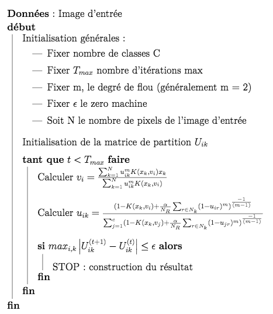
Organisation du code source
Le code source se situe dans le dossier src
Ce dossier contient plus particulièrement un makefile et le fichier main qui contient tout le code du SKFCM.
Résultats
Validation sur données de synthèse
Données de synthèse afin de tester l'algorithme SKFCM avec 3 classes :
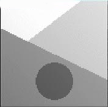
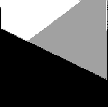
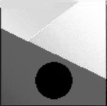
Données de synthèse afin de tester l'algorithme SKFCM avec 4 classes :
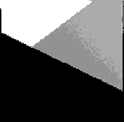
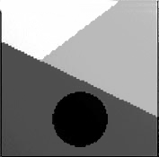
Données réelles
Après avoir évalué notre méthode, nous avons appliqué cet algorithme sur une série d'images réelles. Dans les exemples suivants, nous présenteront dans l'ordre :
- L'image originale
- L'image segmentée et recontruite de manière exclusive (en considérant qu'un pixel à partient à une et une seule classe)
- L'image segmentée et reconstruite de manière partagée (un pixel peut appartenir à plusieurs classes avec une pondération)
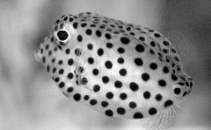
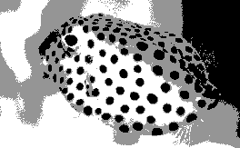
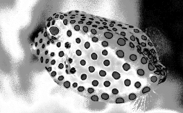
Les images suivantes sont tirées de l'imagerie médicale, et plus particulièrement de clichés provenants d'un IRM.
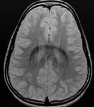
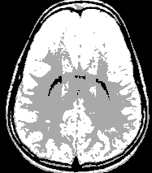
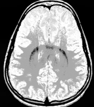
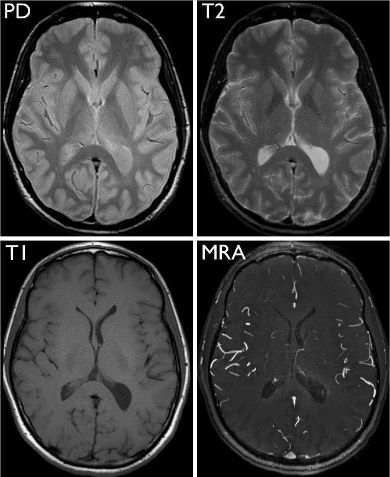
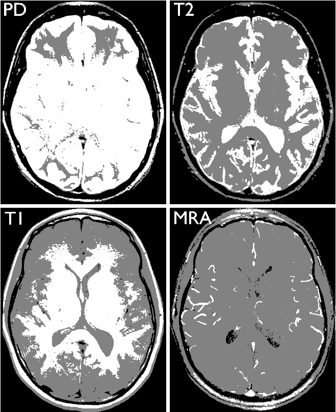
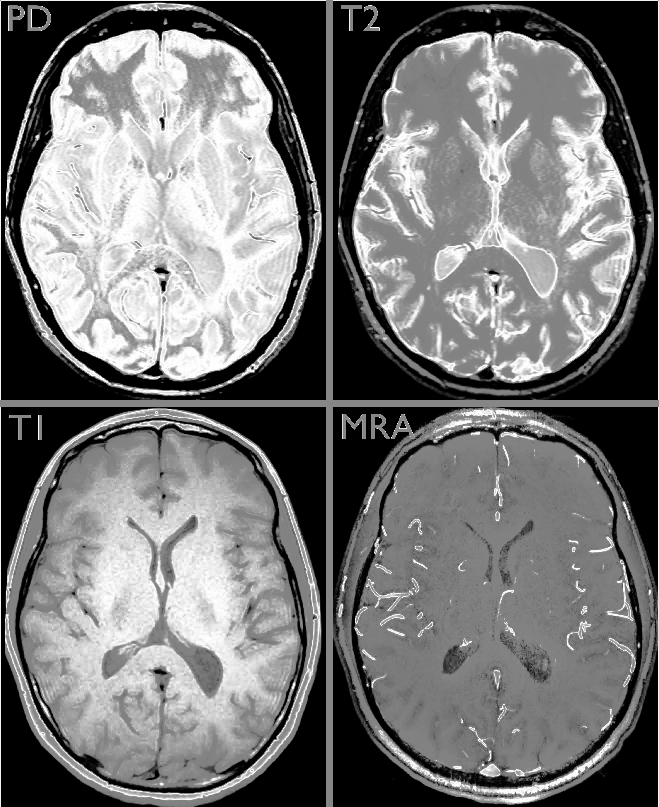
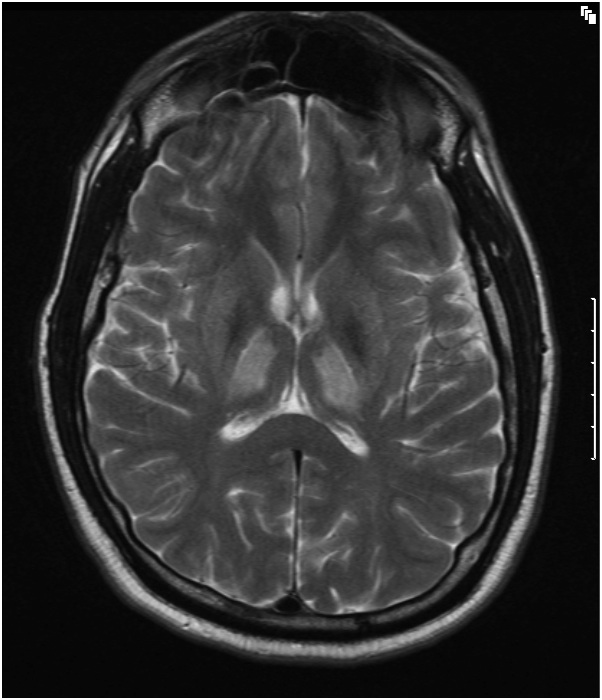
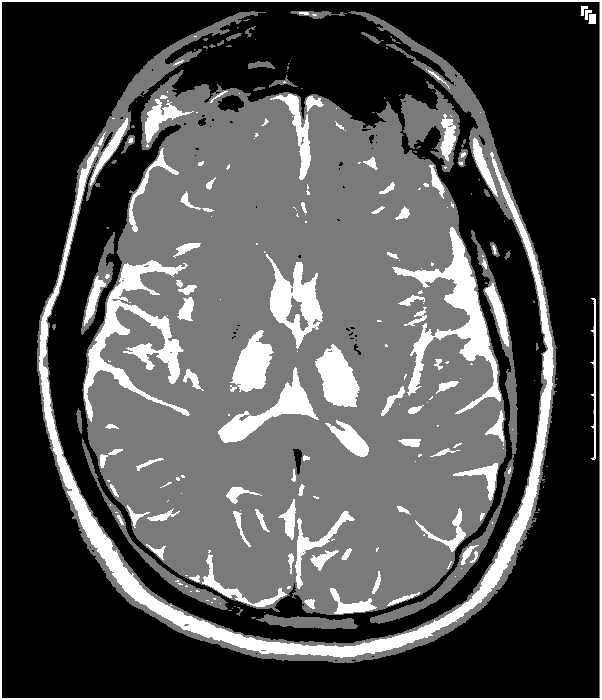
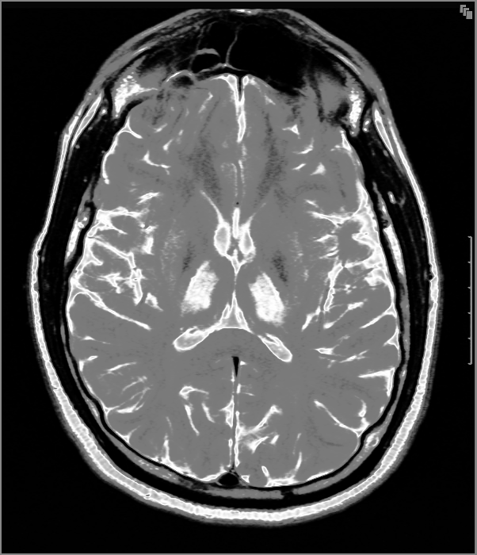
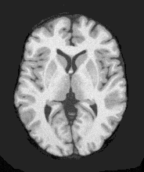
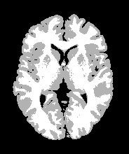
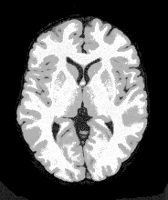
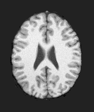
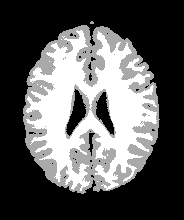
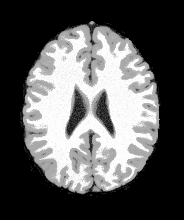
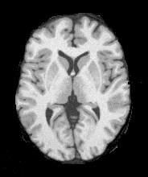
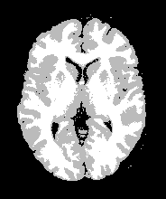
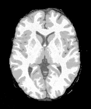
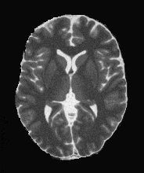
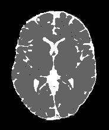
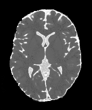
Discussion
L'algorithme SKFCM permet d'obtenir une image segmentée débruitée et respectant les régions floues de l'image originale.
En effet, cet aspect est très bien représenté par la photo du poisson. Dans l'image initiale, on peut avoir du mal à distinguer
les nageoires caudales du poisson.
Avec l'algorithme SKFCM, la segmentation et la reconstruction floue permettent de mettre en évidence ces nageoires sur l'image traitée.
Concernant les images prises par IRM, ces dernières semblent légérement bruitées. C'est pour cette raison
que des méthodes de segmentation classique comme le FCM ne permettent pas une segmentation nette de l'image.
Cependant, l'algortihme SKFCM permet d'obtenir une image segmentée nette à partir d'une image présentant un bruit gaussien
caractéristique des prises faites par résonnance magnétique. C'est pourquoi cette méthode semble très appropriée à ce type d'images,
utiles notamment pour la détection de tumeurs dans le cerveau.
Références
- [1] Pham D.L, Xu C.Y, Prince J.L. A survey of current methods in medical image segmentation.
Annual Review of Biomedical Engineering, Annual Reviews, vol. 2, pp. 315-337, 2000.
[Technical report version, JHU/ECE 99-01, Johns Hopkins University]
- [2] Wells W.M, Grimson W.E.L, Kikinis R. and Arrdrige S.R. Adaptive segmentation of MRI data.
IEEE Trans. Medical. Imaging., vol. 15, pp.429-442, 1996
- [3] Bezdek J.C, Hall L.O, and Clarke L.P. Review of MR image segmentation techniques using
pattern recognition. Medical Physics, vol.20, pp.1033-1048, 1993
- [4] J.C. Bezdek. Pattern Recognition with Fuzzy Objective Function Algorithms. Plenum Press,
New York, 1981
- [5] Dawant B.M, Zijidenbos, A.P., and Margolin, R.A. Correction of intensity variations in MR
image for computer-aided tissue classification. IEEE Trans. on Medical Imaging, vol. 12,
pp.770-781, 1993
- [6] Johnson B., Atkins M.S., Mackiewich B., and Andson M. Segmentation of multiple sclerosis
lesions in intensity corrected multispectral MRI. IEEE Trans. on Medical Imaging, vol. 15,
pp.154-169, 1996
- [7] Pham D.L and Prince J.L. An adaptive fuzzy C-means algorithm for image segmentation in
the presence of intensity inhomogeneities. Pattern Recognition Letters. vol. 20, no.1, pp.57-68, 1999
- [8] Tolias Y.A and Panas S.M. On applying spatial constraints in fuzzy image clustering using a fuzzy rule-based system. IEEE Signal Processing Letters, vol.5,no.10,pp.245-247, 1998
- [9] Tolias Y.A and Panas S.M. Image segmentation by a fuzzy clustering algorithm using adaptive spatially constrained membership fucntions. IEEE Trans. on Systems, Man, and Cybernetics-Part A,vol.28, no.3, pp.359-369, 1998
- [10] Liew A.W.C. Leung S.H. and Lau W.H. Fuzzy image clustering incorporating spatial continuity. IEE Proc.-Vis. Image Signal Process., vol. 147, no.2, pp. 185-192, 2000
- [11] Ahmed M.N, Yamany SM, Mohamed N, Farag AA, and Moriarty T. A modified fuzzy C-means algorithm for bias field estimation and segmentation of MRI data. IEEE Trans. on Medical Imaging, vol.21, no.3, pp.193-199, 2002
- [12] Pham D.L. Fuzzy clustering with spatial constraints. In: Proceedings of the IEEE International Conference on Image Processing, New York, USA, August, 2002
- [13] Muller K.R., Mika S., et al. An Introduction to Kernel-based Learning algorithms. IEEE Trans. Neural Networks, vol.12, no. 2, pp.181-202, 2001
- [14] Cristianini N, Taylor J S. An Introduction to SVMs and other kernel-based learning methods. Cambridge Univ. Press, 2000
- [15] Vapnik V.N. Statistical learning theory. Wiley, New York, 1998
- [16] Scholkopf B. Support vector learning. R. Oldenbourg Verlay, 1997
- [17] Roth V and Steinhage. Nonlinear discriminant analysis using kernel functions. In: Advances in
Neural Information Processing Systems vol. 12, pp.568-574, 2000
- [18] Scholkopf B, Smola A J, Muller K R. Nonlinear component analysis as a kernel eigenvalue
problem. Neural Computation, vol. 10, no. 5, pp.1299-1319, 1998
- [19] Cover T.M., Geometrical and statistical propertyes of systems of linear inequalityies in pattern recognition, IEEE Trans. Electron. Comput. Vol.14, pp.326-334, 1965.
- [20] Girolami M. Mercer kernel-based clustering in feature space. IEEE Trans. Neural Networks, vol. 13, no. 3, pp.780-784, 2002
- [21] Zhang D.Q and Chen S.C. Fuzzy clustering using kernel methods. In: Procedings of the International Conference on Control and Automation, Xiamen, China, June, 2002
- [22] Wu K.L. and Yang M.S. Alternative c-means clustering algorithms, Pattern Recognition. vol. 35, pp. 2267-2278, 2002
- [23] Huber P J. Robust statistics. Wiley, New York, 1981
- [24] Chapelle O., Haffner P. and Vapnik V. Svms for histogram-based image classification. IEEE
Trans. on Neural Networks, vol. 10, no. 5, pp.1055--1065, 1999
- [25] Kwan R.K.S., Evans A.C, Pike G.B. An Extensible MRI Simulator for Post-Processing
Evaluation. Visualization in Biomedical Computing (VBC'96). Lecture Notes in Computer
Science, vol. 1131, pp.135-140, Springer-Verlag, 1996.
- [26] Hur A.B, Horn D,Siegelmann H.T, Vapnik V. Support vector clustering. Journal of Machine
Learning Research, vol.2, pp.125-137, 2001
- [27] Leski J. Towards a robust fuzzy clustering. Fuzzy Sets and Systems. In Press, Corrected Proof,
Available online 8 February 2003
- [28] Lin C.T, Lee C.S.G. Real-time supervised structure/parameter learning for fuzzy neural
network. In: Proc. of 1992 IEEE Int'l Conf. on Fuzzy Systems, San Diego, CA, pp. 1283-1290,
1992
- [29] Masulli F, Schenone A. A fuzzy clustering based segmentation system as support to diagnosis
in medical imaging. Artificial Intelligence in Medicine, vol. 16, no.2, pp. 129-147, 1999
- [30] Dave R.N, Krishnapuram R. Robust clustering method: a unified view. IEEE Trans. Fuzzy Systems. vol.5,no.2, pp.270-293,1997
- [31] A novel kernelized fuzzy C-means algorithm with application in medical image segmentation, Dao-Qiang Zhang, and Song-Can Chen, 2004